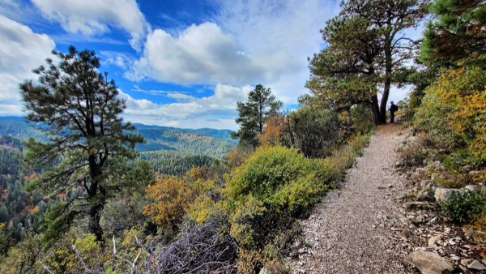
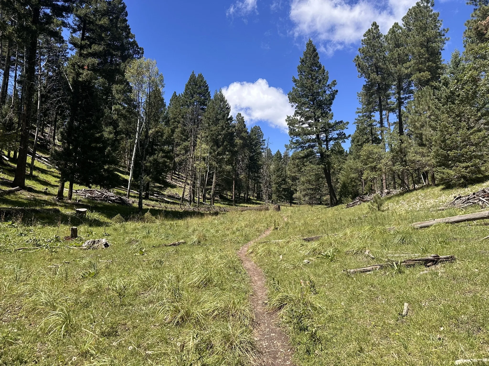
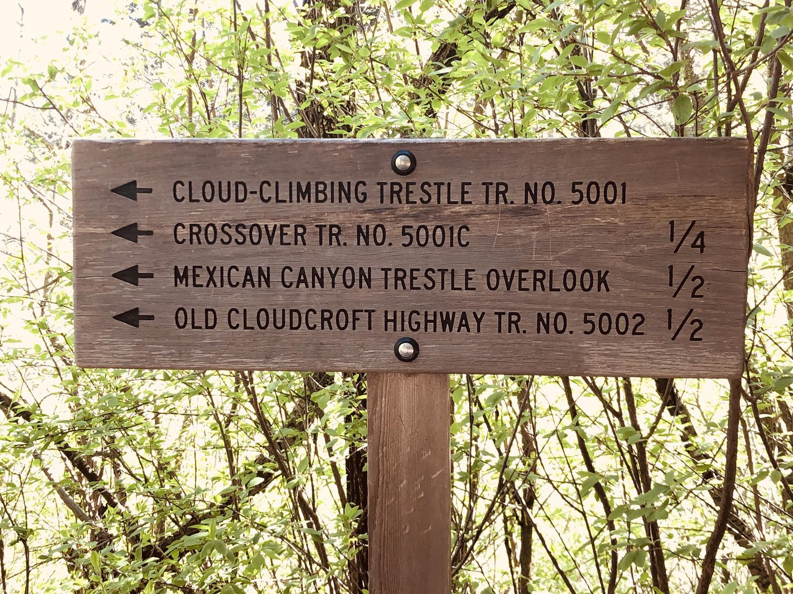
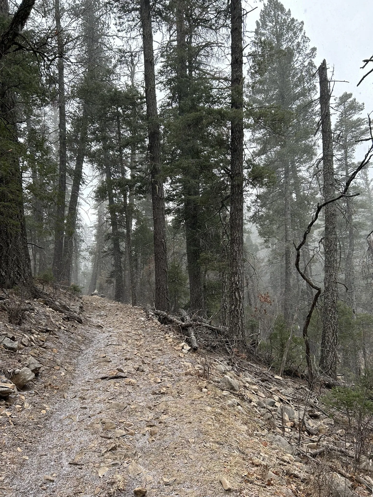
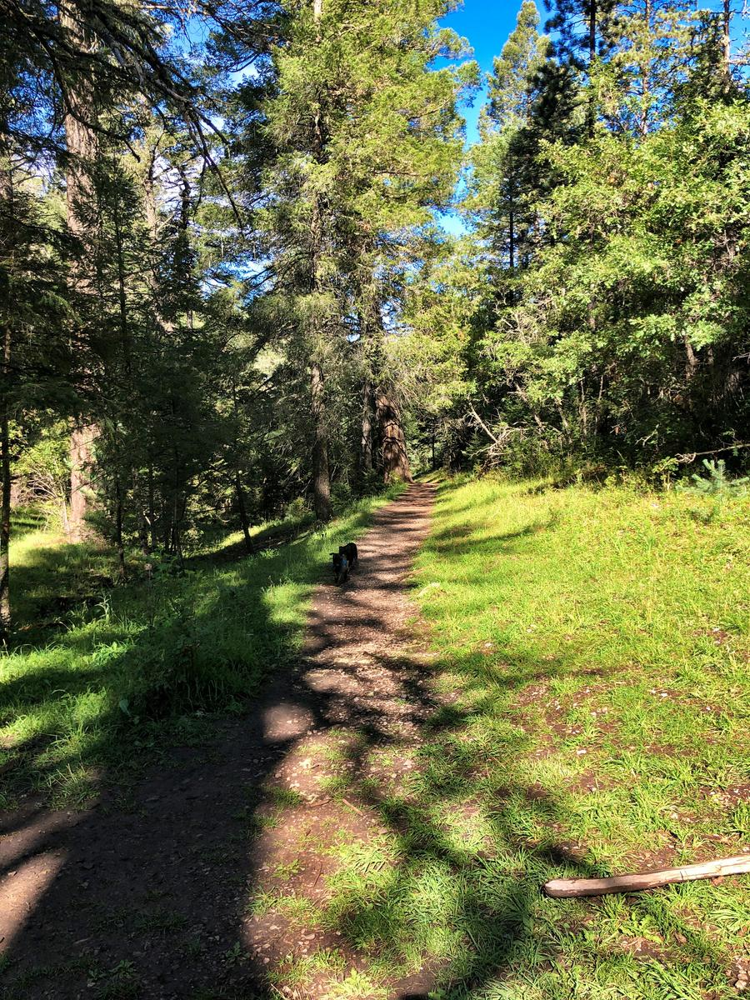
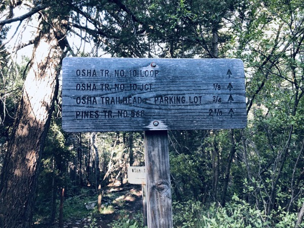
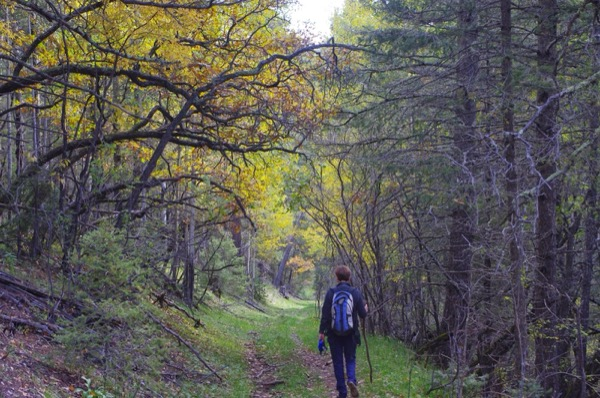
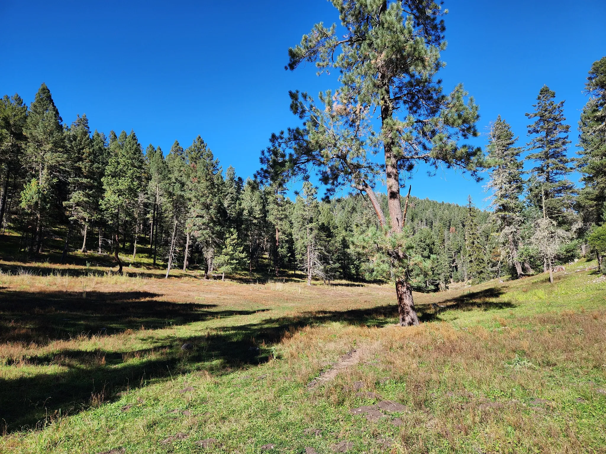
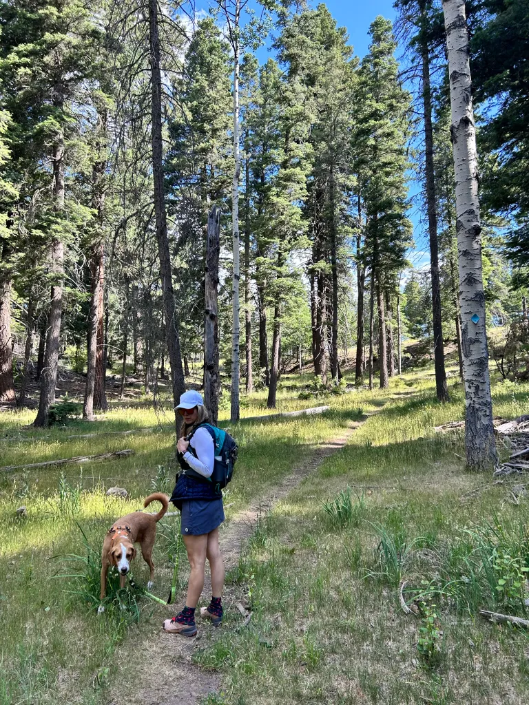
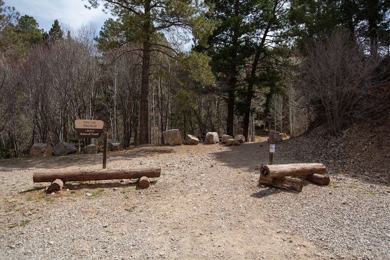

High-Country Hiking
Cloudcroft hiking is high-country hiking. The trails here sit between 8,500 and 9,000+ feet in the Sacramento Mountains, inside the Lincoln National Forest. That means cooler air, mountain forest, and views that stretch across the Tularosa Basin to White Sands — but it also means altitude changes everything.
Even easy trails can feel harder if you drove up from Alamogordo the same day. Weather swings fast. Carry more water than you think you need, keep an extra layer in the car or pack, and check Lincoln National Forest alerts before you leave. As of March 27, 2026, Stage 1 fire restrictions are in effect forest-wide.
These twelve trails are close to Cloudcroft, different from one another, and all supported by current Forest Service material — a real spread of experiences from quiet forest roads and waterfall spurs to railroad-grade loops, rim views, backcountry loop hikes, and a serious desert-to-summit canyon climb.
Hiking at 9,000 Feet











Railroad History
Several of these trails follow or connect to the old Cloud-Climbing Railroad grade. Grand View, Salado Canyon, Cloud-Climbing Trestle, and the Switchback Trail all tie into the railroad story that shaped Cloudcroft.
Basin Views
Osha Trail and the Rim Trail system offer panoramic views across the Tularosa Basin to White Sands. On clear days, the vista stretches over 50 miles from the mountain edge.
Real Range of Difficulty
From a 0.4-mile paved loop to a 5.5-mile desert-to-summit climb, these twelve trails cover the full spectrum. First-time visitors start with Grand View or Pumphouse Ridge; experienced hikers tackle Dog Canyon or Willie White.
Before You Go
Practical details for hiking near Cloudcroft.
Trailheads
Grand View, Salado Canyon: off FR 162C north of High Rolls. Pumphouse Ridge, Osha Trail: near Cloudcroft village. Cloud-Climbing Trestle, Switchback Loop: near Trestle Recreation Area on NM 82. Bluff Springs: off Sunspot Highway (NM 6563). Rim Trail, Wills Canyon, San Andres Canyon, Willie White: access from Rim Trail system or FR roads south of Cloudcroft. Dog Canyon: Oliver Lee State Park, Alamogordo.
Ranger District
575-682-2551
Sacramento Ranger District
4 Lost Lodge Rd, Cloudcroft, NM 88317
M–F 9 AM–3 PM
Gear & Maps
High Altitude Outfitters
575-682-1229
highaltitudenm.com
310 Burro Ave, Cloudcroft
Good to Know
Stage 1 fire restrictions in effect through Sept 30, 2026. No trailhead fees or permits required. Cell service is spotty on forest trails. Leash dogs where required. Afternoon thunderstorms are common June–August — plan for mornings. Check forest alerts before you go.
Official Trail Information
Lincoln National Forest — Sacramento Ranger District Trail Listing. The official trail index with distances, difficulty ratings, and downloadable trail guides for every trail near Cloudcroft.
Current Alerts — Lincoln National Forest Alerts Page. Check closures, fire restrictions, and seasonal access limits before your trip.
Fire Restrictions — Current Fire Restrictions. Stage 1 restrictions are in effect forest-wide March 27 through September 30, 2026.
Hit the Trail
Twelve trails, twelve different experiences — from paved forest loops to a desert-to-summit canyon climb. All free, all close to Cloudcroft, all in the Sacramento Mountains.